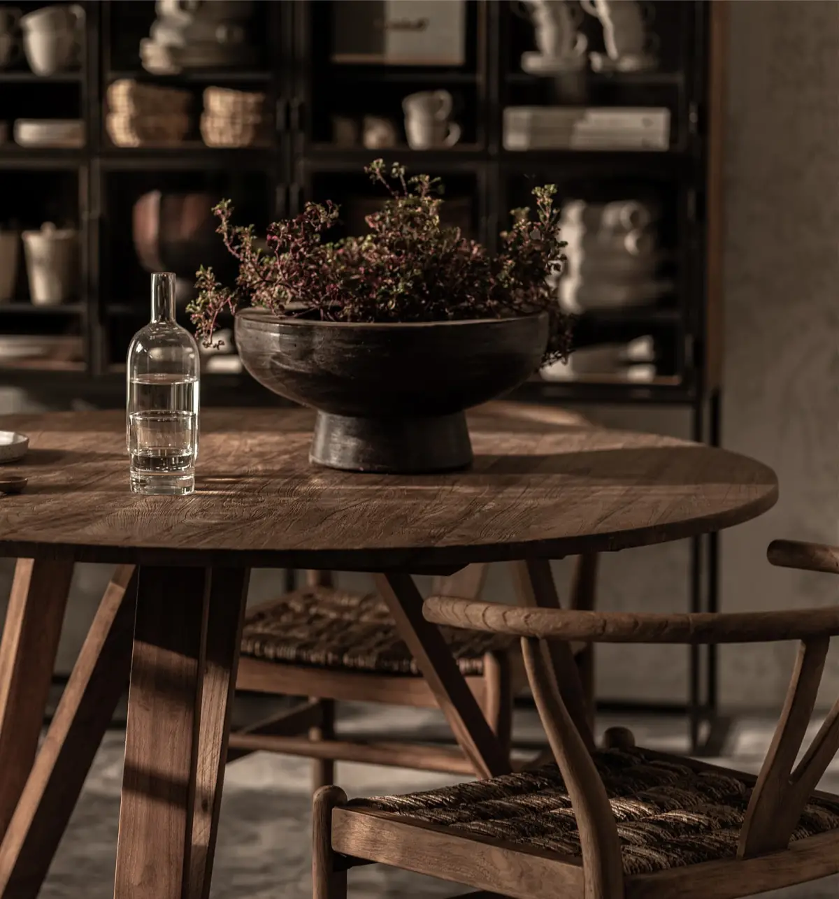

Artisan
Tables in reclaimed teak, with the joinery left as the main detail.
The collection's tables are made of certified, solid reclaimed teak taken from century-old houses in East Java. The distinctive joints on the legs follow traditional Javanese house construction, so each piece reads as furniture first and a set of parts second.
EXPLORE